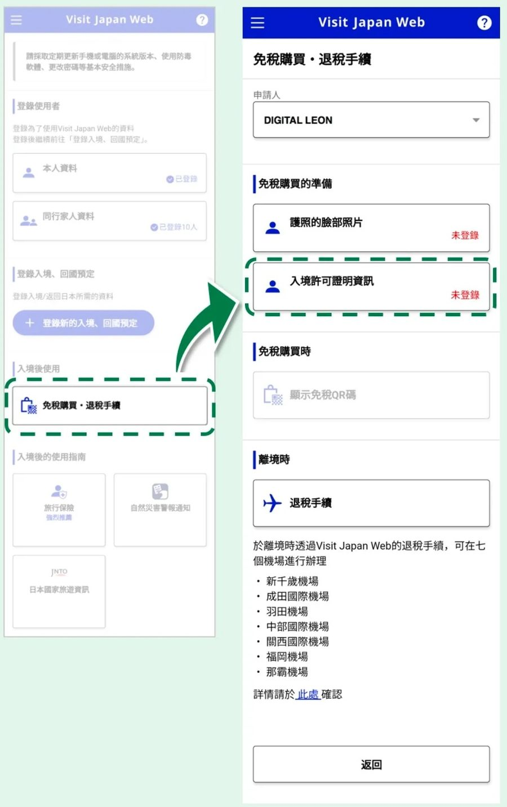
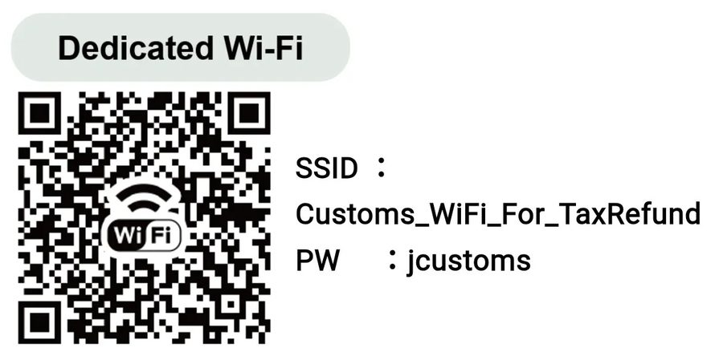
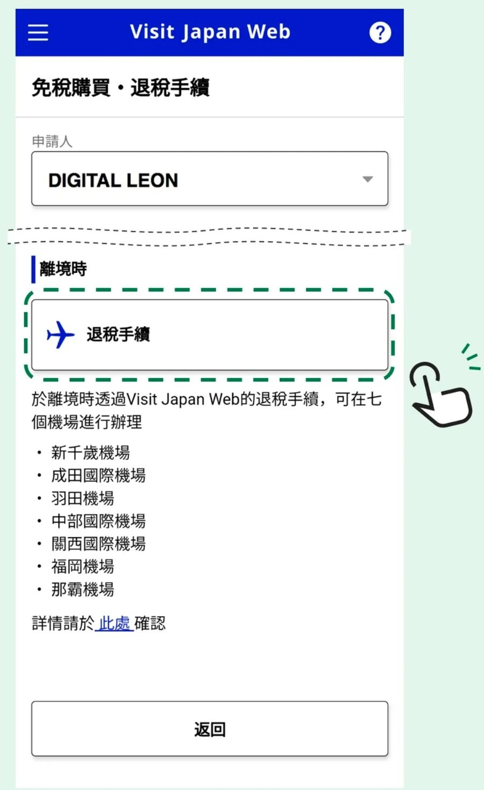
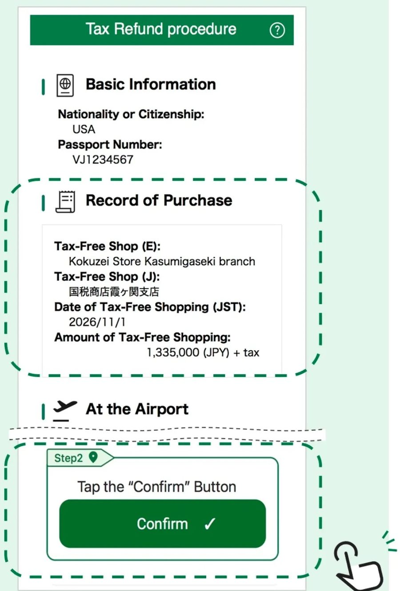
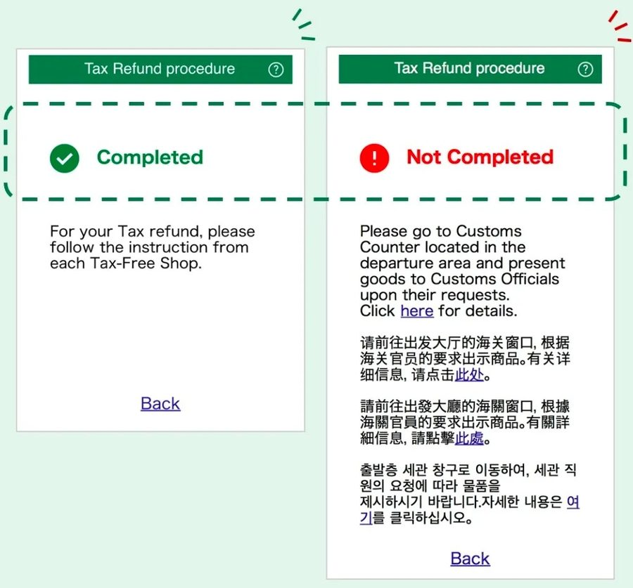

FLIGHTS
航班資訊
台灣虎航・時間依官方最終核准為主
ROUTE
自駕路線
點任一站，直接跳到那一天的行程。
ITINERARY
每日行程
STAYS
住宿與早餐
CHECKLIST

台灣虎航・時間依官方最終核准為主
點任一站，直接跳到那一天的行程。
11 月的北海道白天約 5–10°C，旭川、富良野早晚可能到 0°C 以下，也可能遇到初雪。自駕記得帶齊駕照與日文譯本。
出境時用手機在 Visit Japan Web 完成退稅手續，不用排退稅機台。以下 7 個機場的國際線出發樓層可以辦理，我們回程的新千歲機場也在內。
登入後，在「入境後使用」點「免稅購買・退稅手續」，進入免稅頁面。

到國際線出發樓層後，掃 QR Code 或手動輸入，連上海關的退稅專用 Wi-Fi。

回到 Visit Japan Web 的「免稅購買・退稅手續」頁面，在「離境時」點「退稅手續」。

核對畫面上的免稅購買紀錄（店名、日期、金額）都正確後，點綠色的「Confirm」按鈕。


流程與畫面取自日本國稅廳「線上退稅手續」說明，詳細內容以官方頁面為準：國稅廳 線上退稅手續（繁體中文）↗